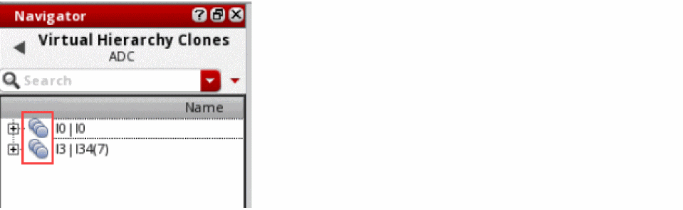

Accessing a Virtual Hierarchy Clone
The virtual hierarchy clones generated in the layout are categorized under the Virtual Hierarchy Clones data set in the Navigator assistant.
-
In the Navigator assistant, select the Virtual Hierarchy Clones data set.
The Navigator tree updates to display the available virtual hierarchy clone families. The virtual hierarchy clone family is represented using the ( ) icon in the Navigator assistant, as displayed. The corresponding virtual hierarchy clones are represented using the ( ) icon.
 - Click the (+) button adjacent to the virtual hierarchy clone family icon in the Navigator tree to view the corresponding clone family members.
- Click the (+) button adjacent to the virtual hierarchy clone icon in the Navigator tree to view the objects inside the virtual hierarchy clone.
-
Right-click a virtual hierarchy clone in the Navigator tree to perform any of the operations supported through the shortcut menu.
A virtual hierarchy clone supports three additional commands in the shortcut menu:
The layout canvas updates in accordance to the selected virtual hierarchy clone operation.
Return to top